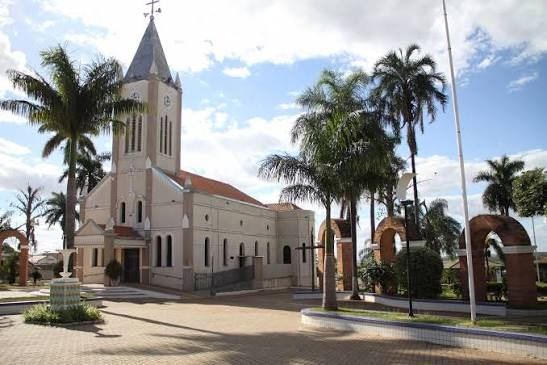
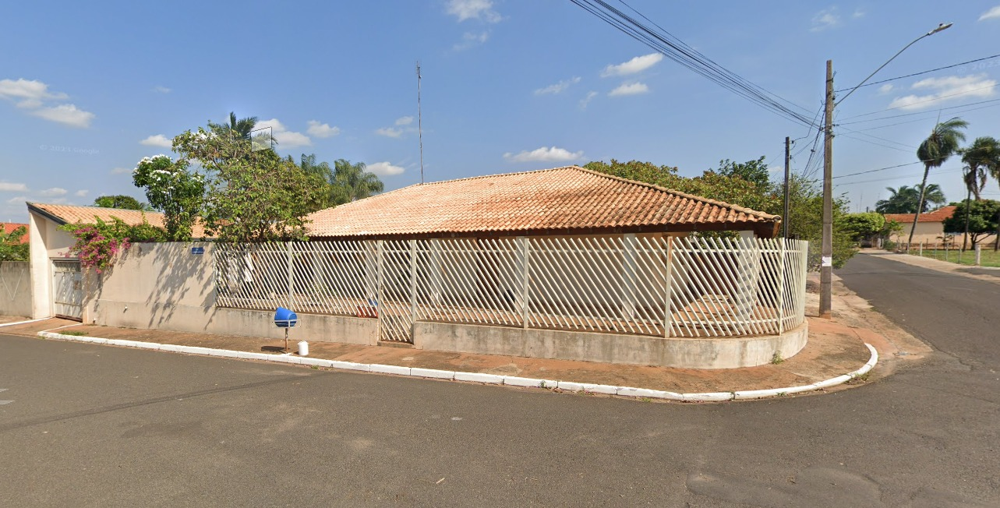
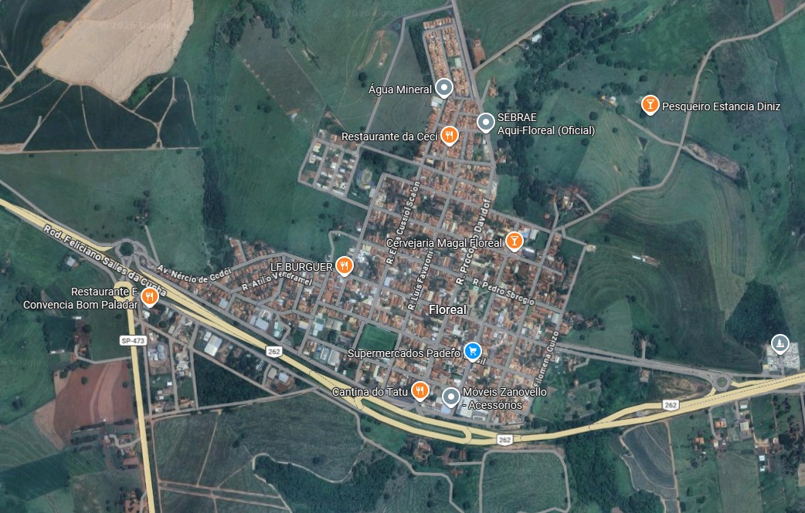

https://maps.app.goo.gl/VkdAZQbcugR3pTZcA
Floreal é uma pequena cidade do interior do estado de São Paulo, conhecida pelo seu ambiente tranquilo, pelas relações próximas entre os moradores e pelo clima típico das cidades do interior. É um lugar onde muitas pessoas valorizam a família, os amigos e a vida comunitária.
A história de Floreal está ligada ao desenvolvimento do interior paulista e ao crescimento das comunidades formadas ao redor das atividades agrícolas. Com o passar dos anos, o município se desenvolveu e se tornou a cidade que conhecemos hoje, mantendo características de uma cidade pequena e acolhedora.
Entre os lugares que fazem parte da vida dos moradores estão as praças, ruas e espaços públicos da cidade, que acabam sendo pontos de encontro para a população. A região também possui áreas rurais e paisagens que representam bastante o interior de São Paulo.
Uma das principais características de Floreal é justamente seu tamanho e a tranquilidade. Por ser uma cidade pequena, é comum que os moradores se conheçam e tenham uma relação próxima. Além disso, a vida no município é bastante ligada às atividades rurais e às tradições do interior paulista.
Floreal é minha cidade natal e faz parte da minha história. Cresci conhecendo as pessoas, os lugares e o jeito tranquilo da cidade, por isso tenho uma ligação especial com ela.


